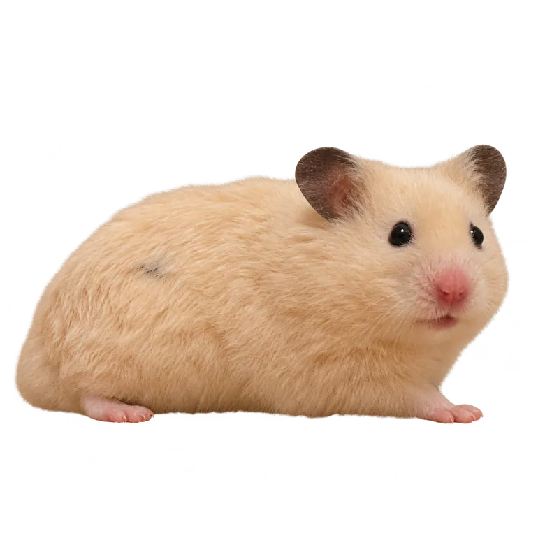

YOKOHAMA
横浜。
ハムチェが歩くと、観覧車がくるくる回る。海辺の港から、冒険がはじまる。
TOKYO
東京。
電車の上にのったハムチェが進むたび、ビルがニョキニョキ伸びていく。夕日から夜景へ、街の顔も変わる。
石川県
ISHIKAWA
石川へ。
夜を抜けて、また朝。山並みが増え、石川県の看板、兼六園、古い町並みがだんだん見えてくる。
山に、タネがひとつ。
SEED
その先に、タネ。
さらに山を越えると、ひとつのタネ。ここから蔦がのびて、きゅうりの世界につながっていく。

雲の上に、
きゅうりの世界。
山のタネから、つたがのびる。葉っぱ、花、きゅうりが順番に現れて、その先は雲の上。
CUCUMBER GARDEN
きゅうり直売所
きゅうり
天国。
ここでは、きゅうりがぜんぶ。
雲の床、きゅうりの門、空に浮かぶ実。これまでと同じ感じで、最後はきゅうり世界へ。
CUCUMBER SKY